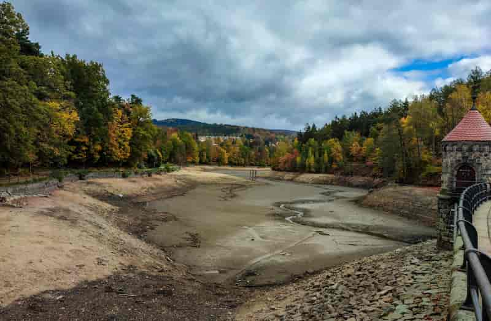

Konečně jsi došel k přehradě, ale úsměv ti okamžitě spadne z tváře, když zjistíš, že přehrada je vypuštěná a rekonstruje se.
"No nic, aspoň jsem si užil tu cestu" povzdechneš si a vracíš se zpět na nádraží aby jsi mohl jet domů.
Právě jsi dohrál tuto hru a já ti děkuji, že jsi jí věnoval chvíli svého času. Jestli chceš můžes prozkoumat daší konce.
